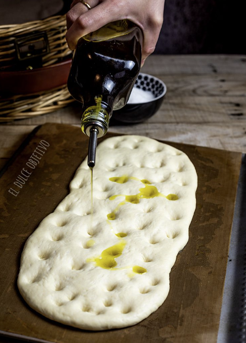

SALAILLAS
Ingredientes para el prefermento:
- 400 gr. harina de fuerza.
- 330 gr. de agua mineral.
- 3 gramos de levadura fresca de panadería ó 1 gr. de levadura seca de panaderia.
Para la masa:
- 200 gr. de harina de trigo común.
- El prefermento.
- 9 gr. de levadura fresca de panadería ó 3 gr. de levadura seca de panadero.
- 10 gr. de aceite de Oliva Virgen Extra.
- 10 gr. de sal fina.
- Aceite para bañar nuestras tortas.
- Sal gruesa para espolvorear.
Preparación:
- La noche previa, prepararemos el prefermenteo haciendo una masa con los tres ingredientes, harina, agua y levadura.
- La dejaremos en un bol grande tapada con papel film hasta la mañana siguiente a temperatura ambiente.
- Para la masa, yo he usado la Kichen Aid con gancho, pero se puede hacer a mano amasando hasta obtener una masa elástica y brillante.
- Ponemos la harina, el prefermento y la levadura y comenzamos a amasar hasta que todos nuestros ingredientes estén bien mezclados.
- Incorporamos el aceite y la sal fina y volvemos a amasar. Sin miedo, hasta que la masa tenga buena consistencia y este brillante.
- Formamos una bola con la masa y en un bol previamente engrasado con aceite la dejamos reposar, tapada con film, hasta que duplique su volumen. El tiempo va a depender de la temperatura que haya en casa.
- Una vez pasado este tiempo, vamos a formar nuestras tortas, yo he preparado 4 redondas de 115 gr. cada una y una alargada con el resto de la masa (son los dos formatos clásicos que podéis encontrar en Granada).
- En una bandeja engrasada con aceite y con un papel encerado vamos depositando la tortas que se formaran a partir de una bola del tamaño que se quiera, y aplanando la palma de las manos hasta que tenga aproximadamente 1 cm de grosor. En el caso de la alargada solo hay que darle ese formato.
- Las dejamos reposar tapadas con un paño, una media hora aproximadamente.
- Mientras, precalentamos nuestro horno con calor arriba y abajo a 220º
- Transcurrido este tiempo, con los nudillos, favor a ir haciéndole las características hendiduras a nuestras tortas.
- Por ultimo, ponemos una cantidad generosa de aceite y sal gorda por encima y las llevamos al horno.
- En el horno va a depender del tamaño, están han estado uno 25 minutos. Tienen que quedar bien doraditas por fuera.
- Sacamos del horno, las dejamos enfriar en una rejilla y a disfrutarlas.
